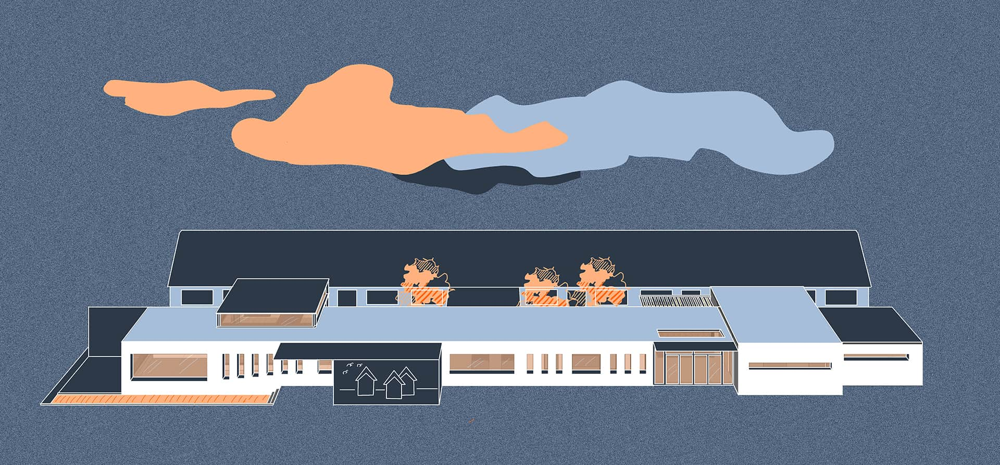
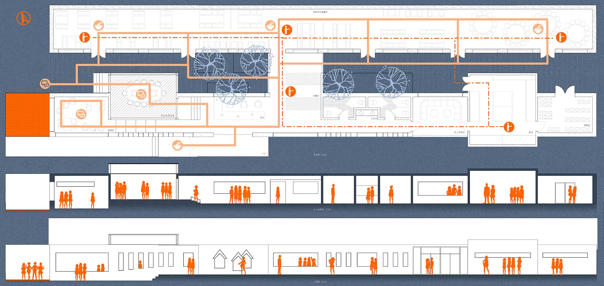
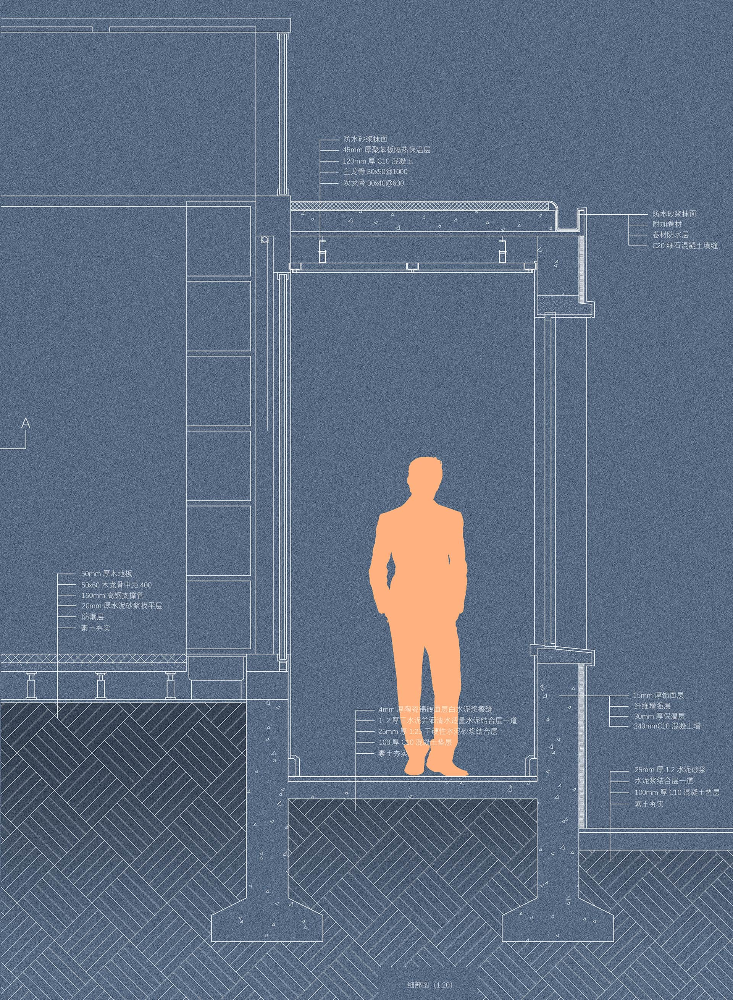

This is a renovation project for local seaweed house in Qingdao. The main purpose of this project was to renovate old buildings to reduce energy consumption and make economic profit.

The restaurant was designed into two parts: dining and communicatng. People eat in the refurbnished seaweed house and have conversation in the newly-build modern house. I designed glass rooms in the south so it could make most use of solar energy. Kitchen garbage could be used as fuel or fertilizer.

Also, in this project I learned how to draw construction details in my project.